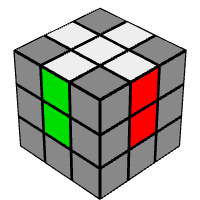
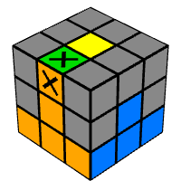
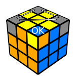

Step 2
Letakkan potongan sudut putih ke tempat yang sesuai.

Step 1
Buatlah salib putih dan pastikan tepinya dipasangkan dengan potongan tengah kanan.
Step 2
Letakkan potongan sudut putih ke tempat yang sesuai.
Step 3
letakkan tepi lapisan kedua di atas bagian tengah yang sama dan lakukan salah satu. (U R U' R' U' F' U F) untuk meletakkannya di sebelah kanan, atau (U' L' U L U F U' F') untuk meletakkannya di sebelah kiri .
Step 4
Di sini Anda perlu membuat tanda silang di bagian kuning, Anda harus mengikuti algoritma set ini (F R U R' U' F')

Step 5
Sekarang salib kuning telah dibuat, Anda sekarang perlu memasangkan tepi dengan melakukan algoritma ini (R U R' U R U2 R')

Step 6
Jika 1 sudut benar, tahan di depan / kanan (jika 0 benar, tahan salah satu sudut di depan / kanan). Kemudian lakukan algoriotema ini (U R U' L' U R' U' L)
Step 7
Pegang kubus sehingga bagian kuningnya menghadap ke bawah, lalu lakukan algoritma ini untuk keempat bagian tepi (R U R' U') hingga sudutnya terpecahkan.